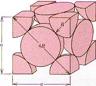

Exercises
Sodium cristallyzes with a body-centered cubic cell. If the density of sodium is 0.968 g/cm3, what's the volume and edge of the unit cell expressed in pm3? Wath is the radius of a sodium atom?
Nichel has a face centered cubic structure and a density of 8.90 g/cm3. What's its atomic radius?
A 3.592 g sample of hydrated magnesium bromide, MgBr2 ⋅ xH2O, is dried out in an oven. When the anhydrous salt is removed from the oven, its mass is 2.263 g. What is the value of x?
A 3.546g sample of a hydrocarbon is burned in an excess of oxygen producing 9.728 of CO2. What mass of hydrogen is contained in the original sample?
Henry's Law constant of methyl bromide, CH3Br, is K = 0.159 mol/(L ⋅ atm) at 25°C. What is the solubility of methyl bromide in water at 25°C and at a partial pressure of 270 mm Hg?
1.45 g of an unknown gas occupies a volume of 0.335 L at the pressure of 1.00 atm and temperature of 100.0 °C. The gas is ________. Atomic weights: Ne = 20.17 g/mol, He = 4.0026 g/mol, Xe = 131.293 g/mol, Kr = 83.8 g/mol, Ar = 39.948 g/mol.
The mole fraction of oxygen in dry air near sea level is 0.20948. The concentration of oxygen is ______ molecules per liter, assuming an atmospheric pressure of 739 torr and a temperature of 29.5°C
Place the following substances in order of increasing vapor pressure at a given temperature. NF3 NH3 BCI3.
The second-order reaction 2 Mn(CO)5 → Mn2(CO)10, has a rate constant equal to 3.0 × 109 M−1 s−1 at 25°C. If the initial concentration of Mn(CO)5 is 2.0 × 10−5 M, how long will it take for 90% of the reactant to disappear?
Determine the percent yield of a reaction that produces 28.65 g of Fe when 50.00 g of Fe2O3 react with excess Al according to the following reaction. Fe2O3(s) + 2 Al(s) → Al2O3(s) + 2 Fe(s)
For the isomerization reaction: butane ⇌ isobutane Kp equals 25 at 500°C. If the initial pressures of butane and isobutane are 5 atm and 0 atm, respectively, what are the pressures of the two gases at equilibrium?
What is the approximate pH at the equivalence point of a weak acid-strong base titration if 25 ml of aqueous formic acid requires 29.80 ml of 0.3567 M NaOH? ka = 1.8 × 10−4 for formic acid.
Solutions
1) Determine mass of two atoms in a fcc cell:
22.99 g/mol / 6.022 x 1023 mol−1 = 3.81767 x 10−23 g (average mass of one atom of Na)
2 ⋅ 3.81767 x 10−23 g = 7.63534 x 10−23 g2) Determine the volume of the unit cell:
7.63534 x 10−23 g / 0.968 g/cm3 = 7.8877479 x 10−23 cm3 = 7.8877479 x 107 pm3
3) To Determine the edge length simply do (7.8877479 x 10−23 cm3)1/3 = 4.28865 x 10 −8 cm
Referring to the following diagram
Use the Pythagorean Theorem to find the atomic radius r
d2 + (d√2)2 = (4r)2
3d2 = (4r)2
3(4.28865 x 10 −8 cm)2 = 16r2
r = 1.857 x 10−8 cm = 185 pm1) We know that in a fcc there are (1/8)8 + (1/2)6 = 4 Ni atoms per unit cell. Determine mass of four atoms in a fcc cell:
58.69 g/mol / 6.022 x 1023 mol−1 = 9.7816 x 10−23 g (average mass of one atom of Ni)
4 ⋅ 9.7816 x 10−23 g = 3.9126 x 10−22 g2) Determine the volume of the unit cell:
3.9126 x 10−22 g / 8.90 g/cm3 = 4.3961 x 10−23 cm3
3) To Determine the edge length simply do (4.3961 ⋅ 10−23 cm3)1/3 = 3.5293 x 10 −8 cm
Referring to the following diagram
Use the Pythagorean Theorem to find the atomic radius r
a2 = (4r)2
2(3.5291 x 10 −8 cm)2 = 16r2
r = 1.2477 x 10−8 cm = 124 pm. ■If we consider a mole of the salt we've given the salt's molar mass 184 g/mol, and that of water 18g/mol that the hydrated salt has a mass of 184g + x 18g, and that of the anhydorus salt is 184 g. We must find the same ratio of mass m(hydrate salt)/m(anhyydrous salt) when conducting the experiment, so
(184g + x 18g) : 184 g = 3.592 g : 2.263 g
solving for x, yields to x = 6. ■
Using the law of conservation of matter, all carbon in the sample eneded up in CO2. The mass of hydrogen is simply the difference between the mass of the sample minus the mass of carbon.
moles of CO2 = 9.728/44 = 0.22 mol.
mass of C = 0.22 mol /12 g/mol = 0.018 g
mass of H in sample = (3.546g −0.018g) = 3.528 g ■By Henry's law written as Ci = piKH, we've Ci = (270mmHg/760mmHg/atm) ⋅ 0.159 mol/(L atm) = 0.056 mol/L. ■
We known that the gas constant is R = 0.082057 L ⋅ atm/K⋅mol. Using the data we calculate the moles of the gas n = 0.335/(0.08*373.15) = 0.011 mol gas, which corresponds to 1.45 grams of Xe gas. ■
First we calculate the number of moles of air contained in 1 L, using the ideal gas law.
n = pV/RT = (739 / 760) (1.000 L) / (0.08205) (28.5 + 273.2) = 0.03928 mol ⋅ L−1
From the given molar fraction of oxygen we calculate the number of moles of oxygen contained in one liter: 0.20948 ⋅ 0.03928 mol⋅L−1 = 0.0083 mol⋅L−1 of O2. We multiply by the Avogadro's number to get the number of molecules per liter: 0.0083 mol⋅L−1 of O2 ⋅ 6.022 x 1023 = 4.9368e+21 molecules. ■
NH3 < NF3 < BCl3 . The vapor pressure is high if the intermolecular forces are weak. Ammonia molecules, exhibit, dipole-dipole interactions and also is hydrogen bonding. So these interactions are strongest thus NH3 will have lower value of vapor pressure. BCl3 is a trigonal planar molecule, so even if each bond is polar the overall molecule is non-polar. it has the highest value of vapor pressure. Forces of attractions in NF3 is stronger in comparison to BCl3 but weaker than NH3 ■
The integration of the differential equation d[Mn(CO)5]/dt = −k[[Mn(CO)5] ⇒ t = [(1/Ct) − (1/Cao)] / K.
Ct = 2.0 ⋅ 10−5 − 0.9 ⋅ 2.0 ⋅ 10−5 = 2.0 ⋅ 10−6 M.
t = [ (1/2 ⋅ 10−6) − (1/2 ⋅ 10−5)] / (3.0⋅ 109) = t = 1.5 ⋅ 10−4 s. ■
From the balananced chemical equation we known that 160 g Fe2O3(s) produce 112 g of Fe. So 160 g : 112.5 g = 50 : x. So we find x = (50 x 112) / 160 = 36.5 g. The percent yield can be calculated as
Percent yield = 28.65/36.5 x 100 = 81.86 . ■
[Isobuthane] / [Buthane] = 25; x/(20−x) = 25, Solving for x yields x = 19.23 which is the [isobuthane]. ■
1 mol of HCOOH reacts with 1 mol of NaOH to produce 1 mol of HCOO−
HCOOH + NaOH ⟶ HCOO−Na+ + H2O
So, moles of NaOH used to reach equivalence point equal to number of moles HCOO− produced at equivalence point. As density of water is 1g/mL, therefore molarity is equal to molality of an aqueous solution. So, moles of HCOO− produced = 29.80 x 0.3567/1000 moles = 0.01063 moles. Total volume of solution at equivalence point = (25+29.80) mL = 54.80 mL. So, at equivalence point concentration of = 0.01063 x 1000/54.80 M = 0.194 M. At equivalence point, pH depends upon hydrolysis of HCOO−. So, we have to construct an ICE table.
HCOOH + H2O ⇌ HCOOH + OH−
I: 0.1940 0 0
C: -x +x +x
E: 0.1940-x x xSo, [HCOOH][OH−]/[HCOO−] = Kb,HCOO− = 10−14/Ka,HCOOH, species inside third bracket represent equilibrium concentrations.
So, x2 = /(0.1940 − x) = 5.56 x 10−11 or rearranging x2 + (5.56 x 10−11 ⋅ x) − (1.079 ⋅ 10−11) = 0
Solving for x = 3.285 ⋅ 10−6 M aand pH = 14 − pOH = 14 + log[OH−] = 14 + log x = 14 + log (3.285 ⋅ 10−6) = 8.52. ■